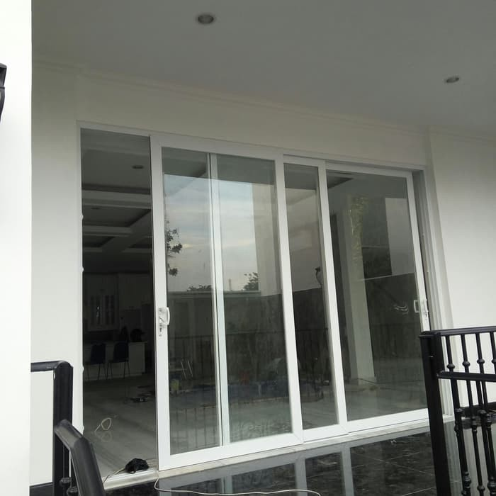

Tanpa ruang ayun
Daun bergerak menyamping, jadi area ayun pintu swing tidak diperlukan; ruang lintasan tetap harus disiapkan.
Pintu UPVC sliding atau pintu geser membuka dengan menggeser daun pada jalurnya, bukan mengayunkannya ke dalam atau ke luar. Mekanisme ini patut dipertimbangkan ketika tata ruang perlu menjaga area ayun pintu tetap bebas. Kebutuhan setiap lokasi berbeda, sehingga ukuran, jumlah daun, jalur, kaca, dan perangkat perlu dibahas sebelum pemesanan. Halaman ini menjelaskan pertimbangan umum untuk membantu Anda menyiapkan konsultasi; rincian akhir mengikuti hasil ukur serta konfigurasi yang disepakati.

Pintu sliding bergerak menyamping pada jalur. Tentukan lebar akses, jumlah daun, dan arah geser; pastikan lintasan bebas dari furnitur serta cukup ruang untuk panel dan track.
Daun hanya membuka sebagian bentang pada satu waktu. Kelancaran bergantung pada kondisi roda dan track, kebersihan, kelurusan, serta pemasangan. Pintu sliding UPVC untuk teras dapat dipertimbangkan bila lebar akses dan perlindungan cuaca sesuai lokasi.
Pilih model berdasarkan tata ruang, area akses, dan kondisi lintasan.
Daun bergerak menyamping, jadi area ayun pintu swing tidak diperlukan; ruang lintasan tetap harus disiapkan.
Pintu sliding UPVC untuk teras atau taman dapat dipertimbangkan setelah lebar lintas, ambang, paparan cuaca, dan detail pemasangan diperiksa.
Kelancaran gerak bergantung pada kondisi roda dan track, kebersihan, kelurusan, serta pemasangan.
Pintu geser dapat dipakai sebagai akses antarruang atau ke teras bila bukaan mendukung. Untuk area luar, periksa hujan, ambang, aliran air, dan drainase; jaga track dari debu serta benda penghalang.
Warna, finishing, kaca, pegangan, pengunci, dan susunan daun mengikuti kebutuhan serta ketersediaan pesanan. Minta rincian opsi aktual tertulis; halaman ini tidak menetapkan spesifikasi yang belum terverifikasi.
Informasi berikut bersifat umum. Ukuran dan pilihan final harus dikonfirmasi melalui survei dan penawaran tertulis.
| Aspek | Informasi |
|---|---|
| Mekanisme | Daun bergerak menyamping pada jalur; arah geser dan susunan daun mengikuti rancangan. |
| Ukuran | Ukuran akhir mengikuti hasil pengukuran lapangan dan harus tercantum pada penawaran. |
| Warna / finishing | Pilihan aktual dikonfirmasi saat konsultasi dan dicatat pada penawaran. |
| Kaca | Jenis dan susunan kaca ditentukan untuk konfigurasi pesanan. |
| Aksesori | Pegangan, pengunci, jalur, dan perangkat lain mengikuti konfigurasi yang disepakati. |
Gunakan pegangan dengan gerakan wajar, bukan mendorong kaca atau membanting daun. Jaga track bersih, awasi anak-anak, dan jangan memaksa pintu yang seret atau berbunyi; minta pemeriksaan dan ikuti petunjuk pengunci.
Sliding menggeser daun, swing berayun, sedangkan folding melipat daun ke sisi. Pertimbangkan lebar bukaan, ruang bebas, lalu lintas, dan akses sebelum memilih; susunan panel serta track tetap memerlukan ruang.
Tabel ini membandingkan mekanisme, bukan performa. Pastikan ukuran, kaca, perangkat, dan lingkup pemasangan yang ditawarkan sesuai hasil survei.
| Model | Mekanisme | Pertimbangan ruang |
|---|---|---|
| Sliding | Daun bergeser pada jalur | Ruang jalur dan susunan daun |
| Swing | Daun berayun pada engsel | Ruang ayun dan arah bukaan |
| Folding | Daun terlipat ke sisi | Ruang lipatan dan lebar bukaan |
Foto berikut memperlihatkan contoh tampilan produk dan model pembanding. Konfigurasi aktual dapat berbeda.


Rincian produk dan pekerjaan dikonfirmasi bersama sebelum pesanan diproses.
Ceritakan fungsi ruang, lokasi, perkiraan ukuran, dan tampilan yang diinginkan. Foto lokasi membantu pembicaraan awal, tetapi tidak menggantikan pengukuran.
Jadwalkan pemeriksaan bukaan untuk mencatat ukuran aktual, kondisi dinding atau lantai, arah bukaan, serta akses kerja.
Tinjau rincian ukuran, konfigurasi, kaca, perangkat, harga, cakupan pekerjaan, dan jadwal. Minta semua kesepakatan dicantumkan sebelum persetujuan.
Setelah rincian dan jadwal disetujui, proses dilanjutkan sesuai kesepakatan. Periksa hasil pemasangan bersama tim dan simpan panduan perawatan yang diberikan.
Detail ukuran, warna, jenis kaca, perangkat, harga, ketersediaan, garansi, dan jadwal dapat berubah menurut pesanan. Konfirmasikan semua data melalui survei serta penawaran tertulis sebelum persetujuan atau produksi. Jangan menggunakan ukuran pada foto sebagai ukuran produksi.
Ukur bukaan, tentukan arah geser, jumlah daun, kebutuhan akses, dan kondisi jalur. Pertimbangkan juga ambang serta frekuensi penggunaan. Ukuran dan pilihan kaca harus dikonfirmasi melalui survei dan penawaran, bukan disimpulkan dari foto.
Pintu geser bisa dipertimbangkan untuk akses antarruang atau teras jika lebar bukaan, lantai, jalur, dan perlindungan area mendukung. Kondisi hujan atau paparan luar perlu dinilai bersama pelaksana agar detail pemasangan sesuai lokasi.
Pilihan kaca, warna, pegangan, pengunci, dan susunan daun bergantung pada ketersediaan serta konfigurasi pesanan. Minta spesifikasi tertulis untuk opsi aktual, termasuk jenis kaca dan perangkat. Jangan menganggap fitur keamanan atau performa tertentu tersedia tanpa konfirmasi.
Jaga jalur tetap bersih, bersihkan bingkai dan kaca dengan kain lembut, dan gerakkan daun tanpa hentakan. Hindari mengorek rel atau memakai pelumas sembarang. Jika pintu terasa berat atau pengunci bermasalah, hentikan pemaksaan dan minta pemeriksaan.
Mulai dengan konsultasi kebutuhan dan foto lokasi, lanjutkan pengukuran lapangan, lalu setujui konfigurasi serta penawaran tertulis. Setelah jadwal dan detail disepakati, tim mengerjakan produksi serta pemasangan sesuai cakupan yang tercantum.
Bandingkan model dan kategori sebelum menentukan konfigurasi.
Kirim pertanyaan dan rencanakan survei melalui WhatsApp.